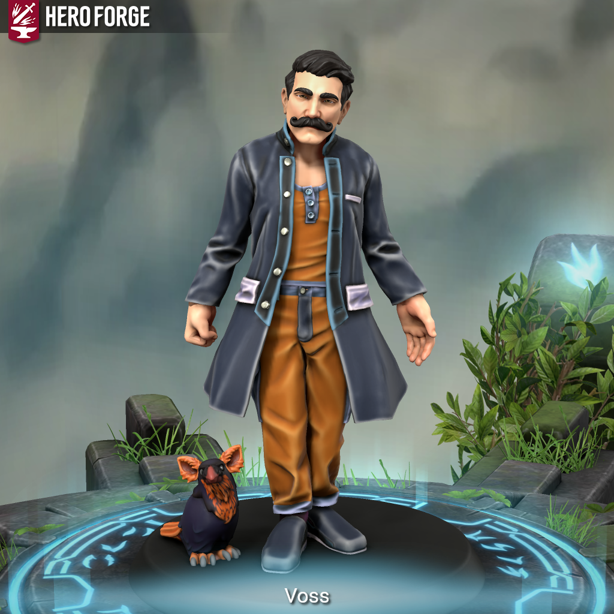

Voss and Pip - Is This Anything?

Meet Voss
He doesn’t remember what ordinary thing he was doing when it happened.
He remembers before; a quiet and unremarkable life, sure, but it was his. And he remembers the after; which is Pip, already perched, already watching him with the patience of a thing that has been waiting a long time and is relieved the wait is finally over. Voss didn’t go looking for this. He is still not quite sure what this is.
Voss is neat about everything. His coat, his words, the careful way he stands in a room as though he’s already located the exits and decided which one he prefers. He watches people the some people watch fires, waiting for it to inevitably get out of hand but already knowing when that will happen. He’s not unfriendly. He just seems that way because of his carefulness.
Ask him what Pip is and he will pause for a long time before responding: “I’m still working on that”.
Meet Pip
Small. Fast. Certain, in an unearned way.
He arrived without invitation nor explanation.
He finishes sentences. Not out of impatience, but because he already knows where the sentence will end, and waiting for it to come seems like a dreadful formality. He is always right about that direction, and knows that this is not entirely endearing. He has not adjusted.
Voss noticed early on that Pip has never said anything provably false. Voss has spent considerable time deciding whether this is reassuring. It is not. Something that has never been wrong is either very wise or has never been tested.
What Pip is, exactly, is a question he deflects with the efficiency of something who has heard it many times and found the asking much more interesting that the answering. Voss asks sometimes, late at night when the camp is quiet. Pip often responds that he is still working on that. Voss suspects this is true, and he is not eased by it.
Meet Voss and Pip
If asked, they’ll tell you they’re not a team. Voss will tell you as much, very carefully, with a pause before the word team like he is checking whether it fits. Pip will tell you much quicker and with more confidence and with zero elaboration. They will then immediately function as a team, and nobody will bring it up, becuase obviously they’re a team.
Voss is an Aberrant Mind Sorcerer who doesn’t so much cast as indicate, neat and deliberate in everything including violence, built around reading the room before acting and acting precisely when he does act. Pip is a familiar by ruling, and something harder to pin down by name in every other measure. Small, construct-adjacent, forward-leaning, eager, with eyes that are slightly too steady and a certainty that has never once wavered in Voss’s presence.
In combat, Voss stands at the edge and tilts the table quietly while Pip handles what needs handling. They are the most efficient two voices in the party, and the least forthcoming. And the question of which one of them is actually doing the magic is, as Voss might say, still being worked on.
#iTA #isThisAnything #DnD #TTRPG #CharacterIntro #Homebrew #Sorcerer #Familiar #Construct #DynamicDuo